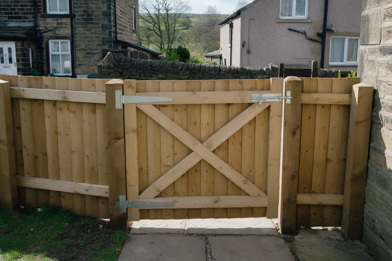

Everything outside comes down to water
Timber outdoors does not rot because it gets wet. It rots because it stays wet. So every decision on an outside job is really about getting water off the timber and air round it: the fall on a deck, the gap between the boards, the gap under the bottom board of a gate, whether the end grain is sitting on something wet, and whether air can get underneath at all.
In a Pennine valley that matters more than it does in a dry county. It rains a lot, the ground stays damp, and anything laid flat on soil with no air under it has a short life whatever it was treated with. A deck that sits in a puddle is a deck you will be replacing, and no amount of treatment changes that.
What a deck is made of
The frame is the deck. The boards are the bit you see and the bit people choose, but the frame is what decides whether it is still solid and quiet in ten years. Joists at a spacing that suits the board thickness, so nothing bounces. A slight fall so water runs off rather than lying. Posts on something solid that is not soil, with the end grain kept up out of the wet. Air underneath, and a way for leaves and muck to be got out rather than composting under there.
Fixings matter more outside than in. Screws in exposed timber want to be stainless or properly coated, and in oak they want to be stainless or nothing, because oak's tannin reacts with steel and leaves a black stain round every screw within a season.
Gates, stores and screens
A gate is a frame with boards on it, and the only thing that stops it dropping is the brace running the right way: up from the hinge side, so it works in compression rather than hanging on a glue line. Get that backwards, which is common, and the gate sags within a year and catches on the path.
Beyond that it is about clearance and water. A gap under the bottom board so it clears the flags when the ground heaves in winter. Hinges and a latch heavy enough for the gate rather than for the packet. Tops of posts cut to shed water or capped. The same thinking covers a bin store, a bike store, a screen or a set of raised beds, which is most of what people actually want outside.
 Generated photo
Generated photoGenerated for this demo. Not a photograph of a real job.

Generated photoA gate that clears the flags and stays square, which is down to the brace running the right way.
On the job
How this one usually goes.
- A look at the ground firstWhere water goes now, where it sits after rain, how level it is, what the ground is made of, and where the access is for timber. On a deck this decides the whole design.
- Set out, and agree the fallPositions marked, heights set off the door threshold and the ground, and a slight fall worked out so water runs off and away rather than back towards the house.
- Framing and postsPosts on something solid rather than soil, end grain kept up out of the wet, frame and joists fixed square and level at a spacing that suits the boards so nothing bounces.
- Boards or cladding onLaid with an even gap for drainage and movement, cut lines kept straight, every cut end treated, and fixings set in a consistent pattern rather than wherever they land.
- Gates, steps and the edgesSteps where there is a drop, a handrail if it needs one, gates hung with the brace the right way up and a gap under the bottom board, and posts capped or cut to shed water.
- Cleared up and explainedOffcuts and sawdust away, and a straight word about what wants doing each year: clear the leaves out from underneath, keep the gaps clear, and re treat it when it starts to look thirsty.
A sample running order for this demo. Yours depends on the property and what the timber turns out to be doing.
Questions
Asked about this job.
How long will a deck last?
There is no number on this page because it would be invented. What it actually depends on is whether water can get off it and air can get under it, which way it faces, how much shade it is in and how often anybody clears the leaves out from underneath.
What we will do is build it so the odds are good: a fall on it, a gap between the boards, posts up out of the wet, air underneath and access to clear it. Then tell you honestly what the yearly jobs are.
Hardwood, softwood or composite?
Treated softwood is what most decks are, it is the cheapest and it is perfectly good if the framing is right and you look after it. Hardwood costs a lot more, lasts longer and looks better, and it is heavier to work and harder on fixings.
Composite boards do not rot and do not want treating, which suits people who do not want a yearly job. They get hot in the sun, some of them scratch, and the frame underneath is still timber, so the frame still has to be right. We will fit any of the three and say what the trade off is rather than pushing one.
Does a deck need planning permission?
Usually not, and sometimes it does: height above ground, how much of the garden it covers, a listed building or a conservation area can all change the answer, and so can a flat or a leasehold.
It is worth a five minute check with the council before anybody builds anything. We will tell you what we know, but the permission is yours to get and we are not going to guess at it for you.
Can you build a bin store, a bike store or a screen?
Yes, and it is a lot of what the outside work actually is. Bin stores, bike stores, log stores, screens to hide an oil tank, raised beds, a pergola, a porch.
Made to the space rather than bought and squeezed in, which outside is usually the whole point, because garden walls and paths are even less square than the inside of a house.
Will you treat it, or is that down to me?
Cut ends get treated as we go, because that is where water gets in and it cannot be done afterwards. The overall finish, oil, stain or a coloured treatment, can be ours or yours.
What we will say plainly is that outside timber is not a fit and forget thing. Clear the leaves, keep the gaps and the drainage clear, and re treat it when the water stops beading on it. Do that and it will outlast one that was never touched by years.
General trade knowledge written for this demo, not advice on your property.
Our work
Sample jobs like this.
Generated photoFramed so the water runs offRipponden · SampleGenerated photoA gate that clears the flagsRastrick · Sample Generated photoA floor made flat and quietHebden Bridge · Sample
Generated photoA floor made flat and quietHebden Bridge · SampleMade up samples with generated pictures. Tap one for the detail.
Also
The other things we do.
Internal doors and fire doors
Hung to the opening you have rather than the one the door was made for. Recesses cut by hand, gaps even all the way round, and it still shuts in August.
More →Staircases and banisters
New spindles and handrails, newel posts, and the creaks taken out of a flight that has been annoying somebody for years. Fitted so the whole thing feels solid under your hand.
More →Fitted wardrobes and storage
Built into the alcove you have, out of square walls and all. Scribed tight to the plaster, up to the ceiling, with no gap on top collecting boxes.
More →Skirting, architrave and flooring prep
Long runs scribed into corners rather than mitred and filled, architrave tight at the head, and floors made flat and quiet before anybody lays anything on them.
More →Sash and timber window repairs
Rotten sections spliced out and new timber let in, sash cords and weights sorted, and the whole thing working again without a plastic window going in.
More →Shall somebody come and measure it?
Tell us the job and your postcode. Twenty minutes with a tape and a level tells us more than any photograph.